MB088 (MM32LINK-MINI)
1. 烧录环节
1.1 烧录工装
- MM32LINK-MINI，注意图示区域有跳帽短接
- Mirco-USB 线缆，请连接至计算机
- 2x5P 转 1x5P 特定线束（黑）
- 1x5P 测试探针
连接示意如下：
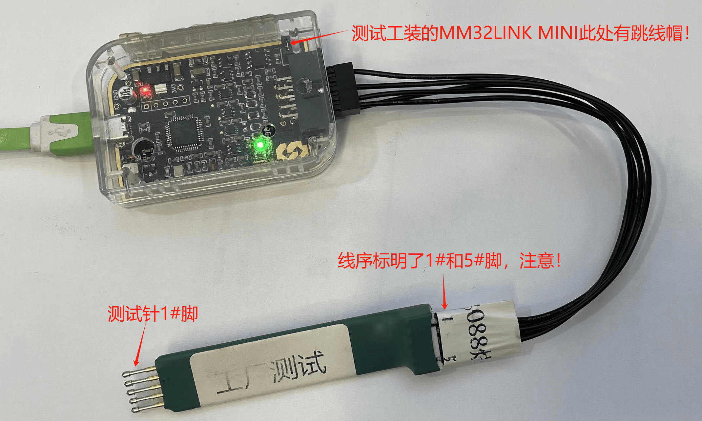
1.2 烧录流程
1.2.1 目录结构
灵动微_工厂测试
- MCUProg_V0.0.8.exe ## 烧录软件
- MBxxx 烧录测试
- MBxxx_XXXX.hex ## hex 文件
- mindmotion.XXXX.pack ## pack 文件
- MBxxx 烧录测试
- MBxxx_XXXX.hex ## hex 文件
- mindmotion.XXXX.pack ## pack 文件
---
测试文件夹如下图所示：
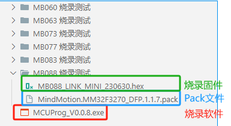
1.2.2 双击运行 MCUProg_V0.0.8.exe
(如果 Windows 提示安全警示弹窗，请点击信任允许后继续)
打开后主界面：
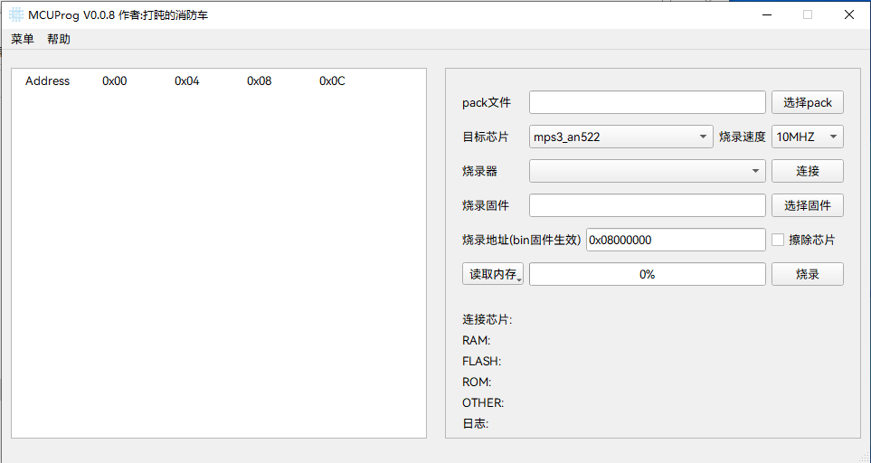
使用提供的工装MM32LINK-MINI连接至待烧录的 MB088 烧录口，1x5P测试探针对应至下图中的1#脚。
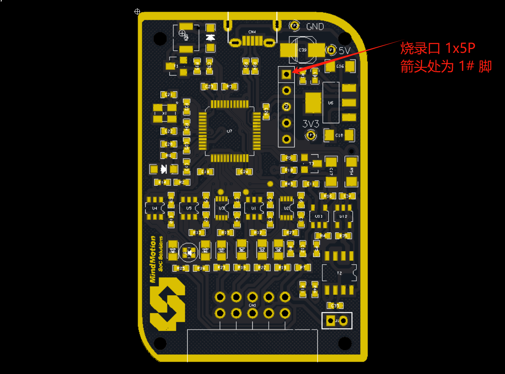
连接后示意图：
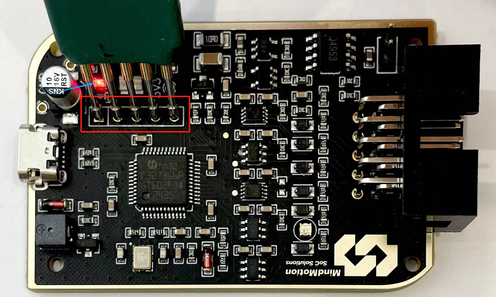
此时红色 LED 灯亮，待烧录板供电正常
1.2.3 烧录软件步骤
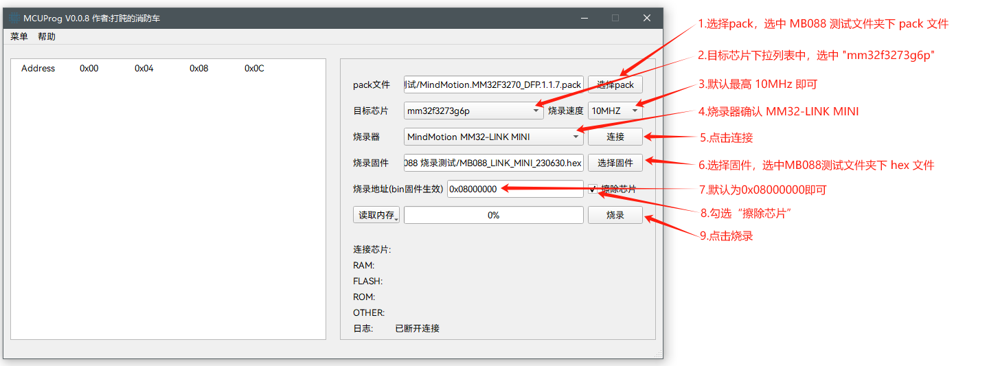
完整步骤：
- 选择pack，选中 MB088 测试文件夹下 .pack 后缀名文件：
MindMotion.MM32F3270_DFP.1.1.7.pack - 目标芯片下拉列表中，选中"
mm32f3273g6p" - 默认为
10MHz即可 - 烧录器确认
MM32-LINK MINI - 点击"
连接" - 选择固件，选中 MB088 测试文件夹下 .hex 后缀名文件：
MB088_LINK_MINI_230630.hex - 烧录地址默认为
0x08000000即可 - 勾选"
擦除芯片" - 点击"
烧录" - 烧录完成后点击"
断开"，如下图所示：
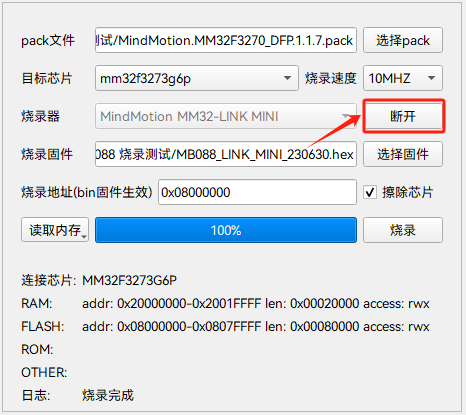
批量烧录时，重复操作 步骤5、步骤9、步骤10 即可。
2. 测试环节
建议先批量烧录后，再全部进行测试，可提升整体效率。
2.1 测试工装
- MB088 待测试板
- 配套蓝色 Micro-USB 数据线
- 配套 2x5P（两端子）线束
- 客供测试板（MB063_Mini-F0144）
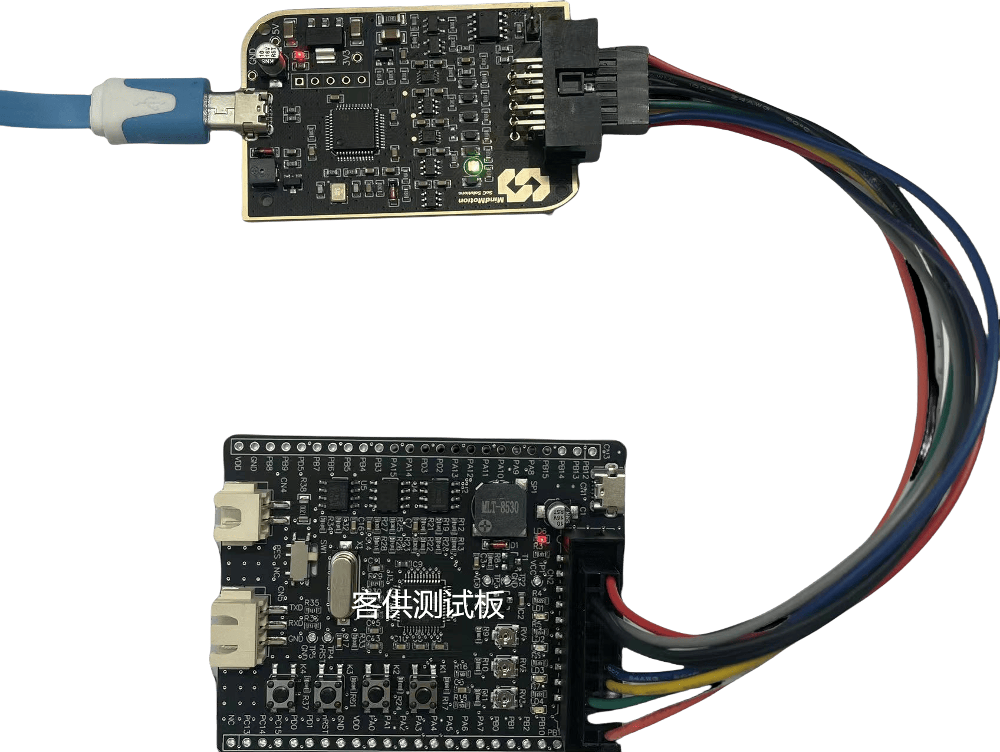
2.2 测试步骤
2.2.1 电源 & 状态灯
MB088 通过配套蓝色 Micro-USB 数据线连接至计算机，MB088 红色LED灯（图示红框）亮，刚上电时绿色双色灯（图示绿框）会有闪烁。如下图所示：
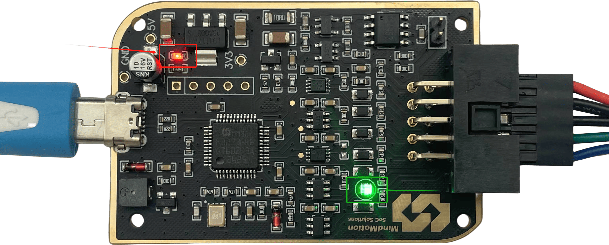
2.2.2 计算机盘符
检查计算机是否新增 MM32LINK I 盘符，如下图所示：
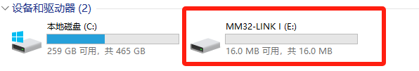
2.2.3 对外供电
配套 2x5P 线序（两端子）分别连接至 MB088 和客供测试板，由于 MB088 默认提供 3.3V 电源输出，客供测试版电源指示灯（LD6）亮。如下图所示：
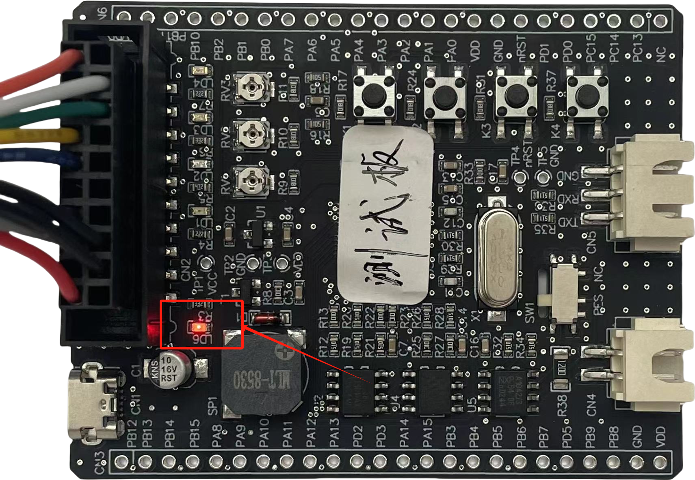
2.2.4 SWD功能
- 运行
MCUProg_V0.0.8.exe - 选择pack：
/灵动微_工厂测试/MB063 烧录测试/MindMotion.MM32F0140_DFP.1.2.2.pack - 选择目标芯片：
mm32f0144c6p - 选择固件：
/灵动微_工厂测试/MB063 烧录测试/MB063_MINI-F0144.hex - 勾选
擦除芯片 - 点击
连接 -
点击
烧录 -
配置界面如下：
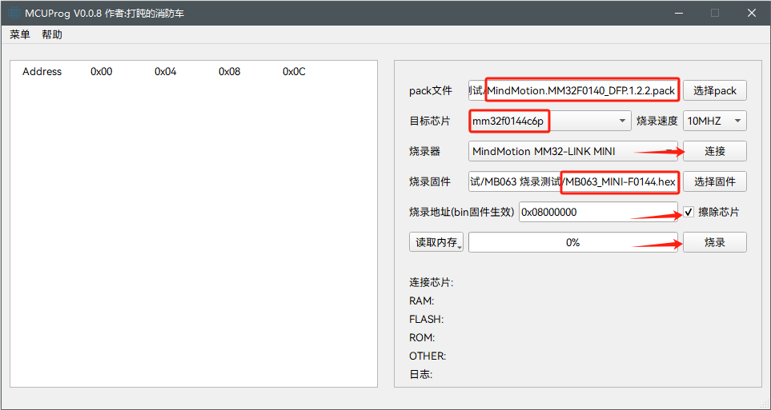
-
日志显示
烧录完成即可，烧录完成界面如下：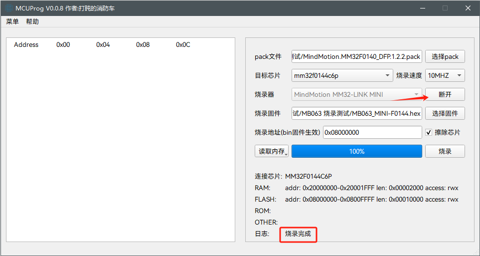
-
测试完成后，点击
断开
常见问题
（暂无）
测试报告
报告可包含测试时间、测试点状态、维修记录、测试结论。模板仅供参考
工单号： 批数量： 报告日期：
| 序号 | 测试时间 | 测试点1 | 测试点2 | 测试点3 | 测试点4 | 维修记录 | 结论 | 测试人 | 备注 |
|---|---|---|---|---|---|---|---|---|---|
| 1 | |||||||||
| 2 | |||||||||
| ... |
版本记录
- V1.0 @ 2024/08/29：首次发布